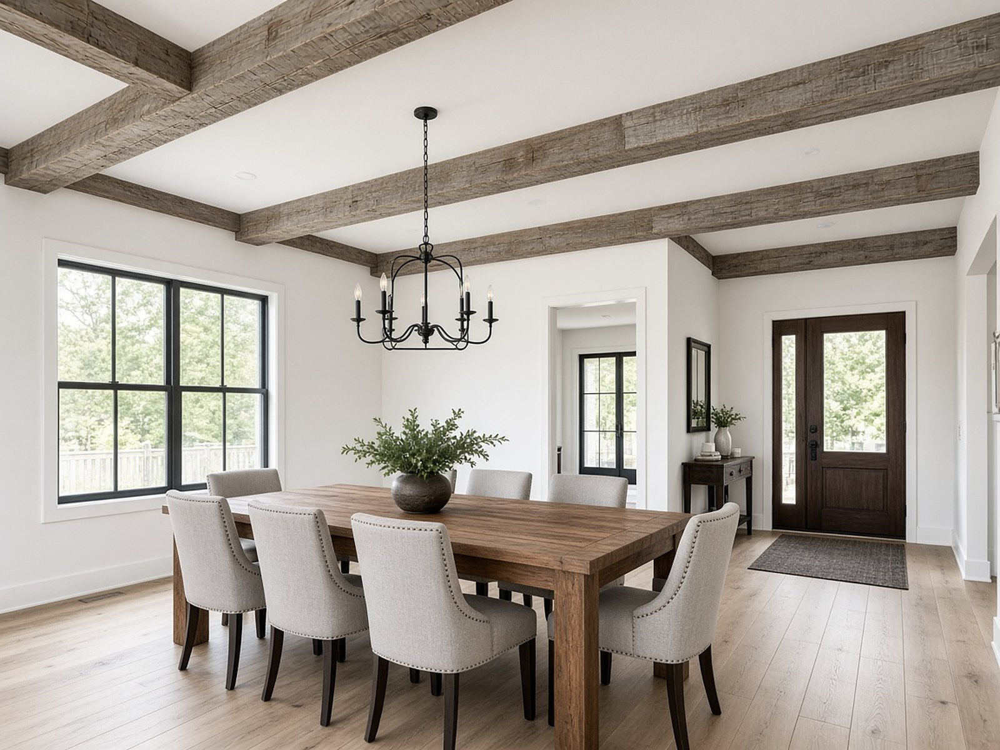

Builder FAQ
Answers for builders, GCs and remodelers.
What box beams are, how they mount, how to measure a run, finishes, sizes, delivery and how to order. For sizes and the full spec sheet, see the sizing guide.

What is a box beam?
A box beam is a three-sided, hollow, reclaimed-look wood beam, open on top for mounting. It gives the look of a solid timber beam without the weight of solid stock.
Do box beams carry structural weight?
No. These box beams are decorative and non-structural. They wrap or hang below framing for appearance and are not load-bearing members.
How do box beams mount?
They are open on top so they fit over a wood cleat or blocking fastened to the ceiling or beam line. The hollow shell hides the cleat once the beam is set and fastened from the sides or top returns.
How should I measure a ceiling run?
Measure each run end to end along the finished ceiling line, then list every length the job needs. Order enough linear feet to cover each run, and note any walls, soffits or breaks so pieces can be cut or butted cleanly on site.
Should I order unfinished or prestained?
Choose prestained when you already know the stain brand, type and color and want beams finished and ready to hang. Choose unfinished when your painter or finisher will match the house on site.
How do I specify a stain brand, type and color?
On the order form, pick Prestained and enter the stain brand, the stain type (for example oil-based, water-based, gel, semi-transparent or solid) and the color name or number. We finish the beams to that spec.
Can I order custom heights and widths?
Yes. Standard heights and widths are 4, 6, 8, 10 or 12 inches, with lengths up to 24 feet per piece. You can mix sizes and lengths on one order. Larger than 12 inches is quoted on request; note it on the form.
How does delivery work?
Enter the delivery address and ZIP on the order form. The form estimates shipping from that address based on distance from Norman, Oklahoma, and the size of the order. Beams ship as crated LTL freight anywhere in the lower 48, with local delivery within about 100 road miles of Norman or pickup near Norman. Freight is confirmed before you pay.
What is the lead time?
Lead time depends on beam size, quantity and finish. The ship or pickup date is confirmed with your quote. If you have a deadline, put it in the notes box on the order form.
How do I order or request a quote?
Fill out the order form with your contact and company, beam height and width, lengths, finish and delivery ZIP, then press Place order. We confirm freight and send a secure payment link. No card is charged on the order page. You can also email wholesalebuilderbeam@agentmail.to with the job details.
Who do you sell to?
Wholesale Builder Beam is trade only. We sell to home builders, general contractors and remodelers. Pricing is per linear foot by beam size and finish; the order form shows an estimate, and the final quote is confirmed before you pay.
What email should I use for questions?
Email wholesalebuilderbeam@agentmail.to with sizes, finish, delivery ZIP and any deadline. We use the same inbox for order follow-ups.